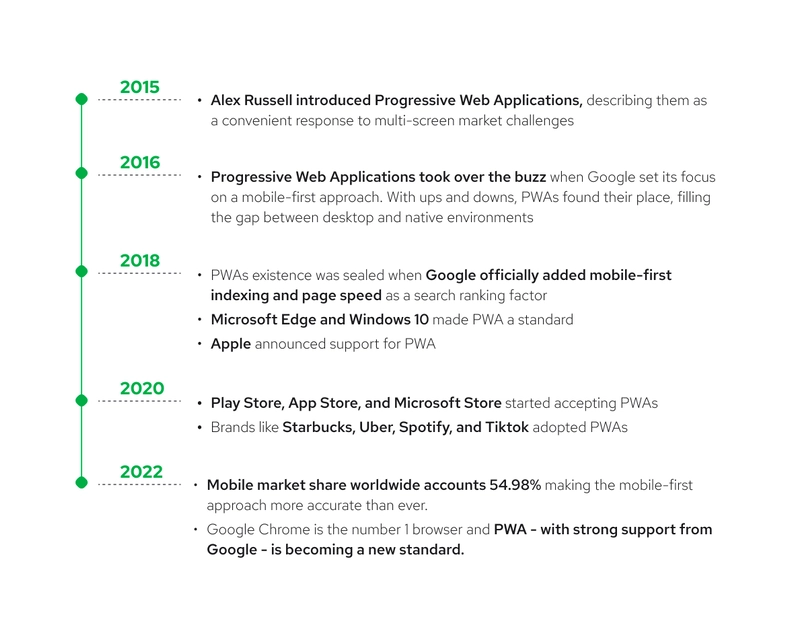
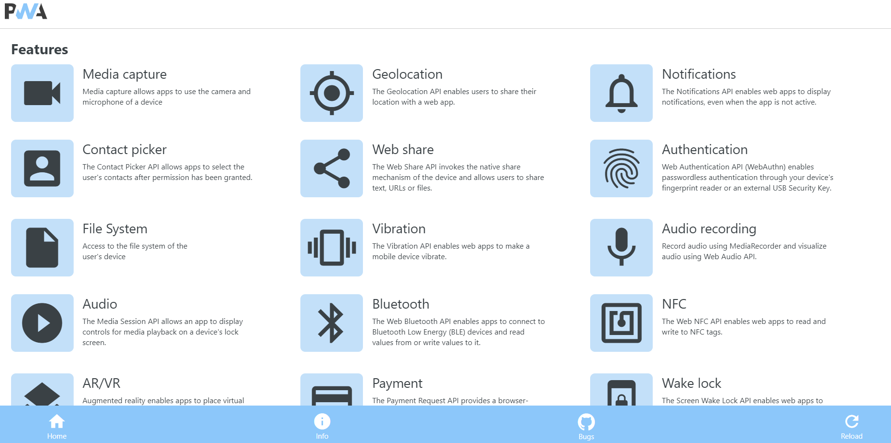
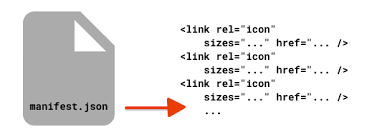
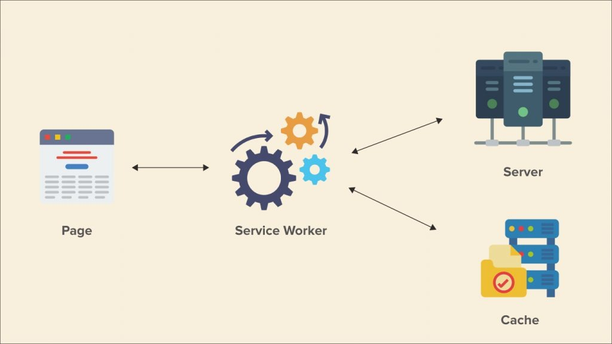
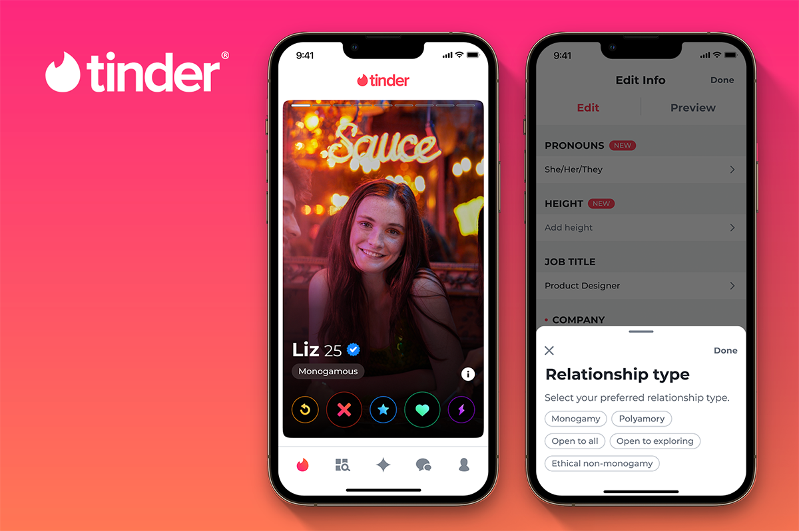

What are Progressive web apps?
Short about pwa hisory
What PWA can?
Adwantages of pwa
- Offline Functionality
- App-Like Experience
- Background Sync
- Access to Device Features
- Faster Loading Speed
- Cross-Platform Compatibility
- App Store Independence
1. Offline Functionality:
2. App-Like Experience:
3. Background Sync:
PWAs can perform background sync, enabling data synchronization in the background even if the app is not actively being used. This feature is useful for real-time data updates or offline data synchronization.
4. Access to Device Features:
PWAs can tap into device features like:
5. Faster Loading Speed:
PWAs are designed to load quickly, even in low network conditions. They utilize techniques like caching resources, preloading data, and efficient rendering to provide a smooth and fast user experience.
6. Cross-Platform Compatibility:
PWAs are built using web technologies such as HTML, CSS, and JavaScript. They can run on any device with a modern web browser, regardless of the underlying operating system, making them platform-independent.
7. App Store Independence:
Unlike native mobile apps, PWAs don't need to go through app stores for distribution. They can be easily discovered and accessed through search engines or shared URLs without the need for app store approval processes.
Key elements of PWA
Key elements of PWA
- Manifest
- Service worker
- Https
Manifest
Service worker
Https
A few words about successful pwas
Starbucks
Uber

Tinder
How to create pwa?
Main steps:
- Start a web server
- Create your app start page
- Create a web app manifest
- Continue building the user interface of your app
- Add a service worker
- Install the app
Step 1 - Start a web server
PWAs are distributed to users by using web servers. To start
developing your PWA, you can use a local web server instead.
For example use:
npx http-server
Step 2 - Create your app start page
So far, there is no content available on your web server. Start by creating the first page that users will see when they access your app.
Step 3 - Create a web app manifest
Create new file manifest.json and write this code:
{
"lang": "en-us", "name": "App name",
"short_name": "short name",
"description": "A basic app",
"start_url": "/",
"background_color": "#2f3d58",
"theme_color": "#2f3d58",
"orientation": "any",
"display": "standalone",
"icons": [ {
"src": "/icon512.png",
"sizes": "512x512" }
] }Step 4 - Continue building the user interface of your app

Step 5 - Add a service worker
Create a new file, add the following content, and save the file as sw.js:
const CACHE_NAME = `YourApp-v1`;
// Use the install event to pre-cache all initial resources.
self.addEventListener('install', event => {
event.waitUntil((async () => {
const cache = await caches.open(CACHE_NAME);
cache.addAll([
'/',
'/yourApp.js',
'/yourApp.css'
]);
})());
});
self.addEventListener('fetch', event => {
event.respondWith((async () => {
const cache = await caches.open(CACHE_NAME);
// Get the resource from the cache.
const cachedResponse = await cache.match(event.request);
if (cachedResponse) {
return cachedResponse;
} else {
try {
// If the resource was not in the cache, try the network.
const fetchResponse = await fetch(event.request);
// Save the resource in the cache and return it.
cache.put(event.request, fetchResponse.clone());
return fetchResponse;
} catch (e) {
// The network failed.
}
}
})());
});Step 5 - Add a service worker
Open index.html and add the following code at the end of the body (in script tag) to register your service worker:
if('serviceWorker' in navigator) {
navigator.serviceWorker.register('/sw.js', { scope: '/' });
}
To confirm that your service worker is running:
- Open DevTools
- Open the Application tool, then Service Workers. If the service worker isn't displayed, refresh the page.
- Try your app offline
Step 6 - Install the app

Now that your app has a web app manifest and a service worker, supporting browsers can install it as a PWA. Find the App available button appears in the address bar Click Install to install the app locally. After the installation completes, your app is displayed in its own window, and its own application icon in the Taskbar.
Enjoy your Pwa))
Conclusion
Progressive Web Apps (PWAs) represent a modern approach to application development that combines the best qualities of websites and native apps.
-
Advantages of PWAs include fast loading, responsiveness, updates without reinstalling, they are installable, can work offline and cross-platform compatibility.
-
Several successful examples of PWAs demonstrate how they can significantly improve the user experience and attractiveness of an application.